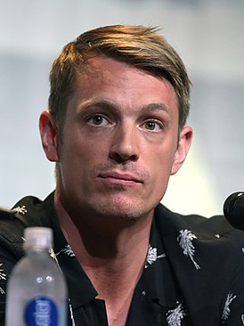

Ма́рго Эли́с Ро́бби (англ. Margot Elise Robbie; род. 2 июля 1990, Дэлби, Квинсленд, Австралия) — австралийская актриса и кинопродюсер. Начала карьеру в 2007 году в Австралии. Известность на родине ей принесла роль Донны Фридмен в телесериале «Соседи» (2008—2011). Переехав в США в 2011 году, она сыграла Лору Кэмерон в телесериале «Пан Американ», после чего последовало множество предложений крупных ролей в художественных фильмах. Наиболее примечательные из них — Шарлотта в «Бойфренд из будущего» (2013), Наоми Лапалья в «Волк с Уолл-стрит» (2013), за которую Робби получила премию «Империя», Джейн Портер в «Тарзан. Легенда» (2016), Харли Квинн в «Отряд самоубийц» (2016), за которую она получила премию «Critics’ Choice Movie Awards». Роль Тони Хардинг в фильме «Тоня против всех» (2017) принесла Марго премии «AACTA Awards», «Critics’ Choice Movie Awards», номинации на премии «Оскар», «Золотой глобус», BAFTA и ряд других. Роль Кайлы Посписил в фильме «Скандал» (2019) принесла Марго премию «AACTA Awards», номинации на премии «Оскар», «Золотой глобус», BAFTA, Гильдии киноактёров США, «Critics’ Choice Movie Awards» и ряд других.
Уи́ллард Кэрролл (Уи́лл) Смит — младший (англ. Willard Carroll «Will» Smith, Jr.; род. 25 сентября 1968 года[2], Филадельфия, Пенсильвания, США) — американский актёр, режиссер и хип-хоп исполнитель. Номинант двух премий «Оскар», пятикратный номинант «Золотого глобуса», обладатель премии «Грэмми». В 2008 году Уилл Смит возглавил список Forbes самых высокооплачиваемых актёров Голливуда, заработав за год $80 млн. Смит стал первым актёром в истории Голливуда, чьи девять фильмов подряд собрали в прокате более 100 млн долларов США каждый
После смерти Супермена агент разведки Аманда Уоллер собирает группу опасных преступников. Туда входят: сумасшедшая гимнастка-психиатр Харли Квинн, наёмный убийца Флойд Лоутон / Дэдшот, гангстер-пирокинетик Чато Сантана / Эль Диабло, вор Диггер Харкнесс / Капитан Бумеранг, мутант-каннибал Уэйлон Джонс / Убийца Крок и специализированный наёмник Кристофер Вайс / Слипнот. Всех их Аманда вытаскивает из тюрьмы «Белль-Рив» и помещает под командование полковника Рика Флага. Отряд собираются использовать в качестве пушечного мяса в миссиях высокого риска для правительства Соединённых Штатов Америки. Каждому члену команды имплантируют в шею нанобомбу, которая сдетонирует, если кто-либо из отряда попробует взбунтоваться или сбежать. Один из предполагаемых новобранцев — Уоллер, девушка Рика Флага, доктор Джун Мун. Она — археолог, в которую, после открытия статуэтки проклятого идола, вселился дух ведьмы-богини, известной как «Чародейка». Но она быстро выходит из-под контроля Аманды, решив уничтожить человечество. Чародейка осаждает Мидвэй-Сити с ордой монстров и призывает себе на помощь своего брата Инкубуса. Затем Уоллер направляет отряд для эвакуации важной персоны из Нижнего города. Рик предупреждает их, что сердце Чародейки должно быть вырезано из неё, чтобы вернуть над ней контроль. Перед их отъездом к Отряду присоединяется Тацу Ямасиро / Катана, которая искусно владеет мистическим мечом и выступает в роли телохранителя Флага. Возлюбленный Харли, Джокер, узнаёт о затруднительном положении своей девушки и спешит ей на помощь. Мучая одного из людей Уоллер, он узнаёт местонахождение объекта, где производят вживляемые нанобомбы. Найдя этот объект, Джокер шантажирует одного из учёных, участвующих в этой программе, чтобы он отключил бомбу Харли. Почувствовав приближение Отряда, Чародейка разрушает их вертолёт, заставляя идти к цели пешком. По дороге Капитан Бумеранг убеждает Слипкнота, что бомбы являются лишь уловкой, чтобы держать их под контролем. Слипкнот пытается сбежать, и бомба в его шее детонирует. Команда подвергается атаке приспешников Чародейки, но им удаётся бежать к месту назначения в подземном бункере. Там они узнают, что их цель — сама Аманда Уоллер, которая изо всех сил пытается скрыть свою причастность. Отряд провожает Уоллер на крышу, где за ней должен прилететь вертолёт. Но прибывший вертолёт оказался захвачен Джокером и его людьми, которые открывают огонь по крыше, пока Харли поднимается на борт. Тем не менее, вертолёт сбивают люди Уоллер, Джокер и Харли собираются вместе прыгать, но Харли падает из вертолёта в последний момент, в то время как сам Джокер, казалось бы, погибает в результате взрыва. После этого Харли Квинн вновь присоединяется к Отряду. Позже за Уоллер прилетает ещё вертолёт и перед улетом она говорит, что вышлет ещё вертолёт за главными героями. Но во время полета вертолёт Аманды сбивает Инкубус. Тем временем, узнав местоположение Аманды, слуги Чародейки похищают её, чтобы доставить своей госпоже. Аманда скомпрометирована, Рик освобождает Отряд от миссии и решает продолжить её в одиночку. Понимая, что у каждого из команды есть возможность проявить себя, все вскоре снова присоединяются к Флагу. Они находят Чародейку и Уоллер на частично затопленной станции метро. Крок плывёт под водой, чтобы заложить бомбу прямо под Инкубусом, в то время как другие борются с Чародейкой и её братом наверху. Эль Диабло в схватке полностью раскрывает свои способности и таким образом удерживает Инкубуса над точкой взрыва бомбы. Бомба взрывается под ними, убивая обоих, а также лейтенанта Джи Кью Эдвардса, подорвавшего сам заряд. Члены Отряда дают Чародейке бой, но она одерживает верх и предлагает исполнить их самые сокровенные желания в обмен на верность ей. Харли симулирует интерес к её предложению, чтобы подобраться достаточно близко, и вырывает ей сердце. Сразу после этого Убийца Крок бросает взрывчатку в портал, открытый Чародейкой, Дэдшот стреляет во взрывчатку и взрыв закрывает портал. Рик берёт сердце Чародейки и сминает, убивая её и тем самым освобождая Джун от её влияния. Затем члены Отряда возвращаются в тюрьму «Белль-Рив». За их заслуги Аманда сокращает им сроки на десять лет и обозначает им небольшие привилегии в тюрьме, кроме Капитана Бумеранга. Вскоре после этого Джокер, который пережил взрыв, врывается в тюрьму со своими людьми, чтобы спасти Харли. Войдя в её клетку, он обнимает любимую и говорит ей: «Пойдём домой». В сцене после титров Аманда встречается с Брюсом Уэйном. Уэйн соглашается на взаимовыгодное сотрудничество: он защитит Аманду от огласки её промашки с Чародейкой, а она в ответ предоставит файлы правительства, в которых содержится информация о мета-людях. Аманда передаёт Брюсу папку с этой информацией, тот пролистывает её, и зритель может заметить среди прочих досье на Чародейку, Флэша и Аквамена. В конце разговора Уоллер тонко намекает на тайную жизнь Уэйна, как Бэтмена, на что Брюс говорит Аманде свернуть проект Отряда Самоубийц, или он с друзьями свернёт его сам.